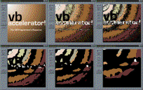

VB5 256 Colour DIBSection Demonstration (132K)
VB5 256 Colour DIBSection Demonstration (132K)
 VB6 256 Colour DIBSection Demonstration (130K)
VB6 256 Colour DIBSection Demonstration (130K)
 13 Jan 2003
13 Jan 2003
Added a VB6 download.

256 Colour DIBSections
The fastest way to animate all the pixels using GDI
The Image Processing using DIBSections sample provided on this site shows you how to implement a True-Colour DIBSection in VB. This is great for code which needs an effectively unlimited number of colours to perform effectively (such as blurring, sharpening, resampling and so on) but if you are interested in high-performance graphics effects it isn't the quickest way.
True-colour images use 3 bytes for every pixel. To change the colours of a true-colour image requires you to modify every single byte in the image in turn. However, if you can manage using only 256 colours in your image then things can work much quicker. Firstly, there is only 1 byte per pixel in a 256 colour image, so to process through all the pixels there are 9x less bytes to consider. Secondly, the palette of a 256 colour image is implemented in a separate data structure. If you just want to modify the colours of the image, but not the pixels, you can modify the palette information directly - so you only have to access 256x3 bytes.
This means graphics code using 256 colour images can run considerably quicker than its true-colour counterpart. In this article I reimplement some of the colour algorithms using a 256 colour version of the DIB Section class. The performance increase is stunning - for example, to perform a fade on a 512x512 image runs 20x quicker on my system, at a ridiculous 200 frames per second!
In Practice
First I should note that this sample, although it works on 256 colour images, has only been coded for systems with more than 256 colour displays. To get it to work on a 256 colour display means you have to implement palette handling, and Visual Basic makes palette modification incredibly difficult. I suppose VB's palette system is aimed at database programmers who want to show 256 colour images on 256 colour displays, but that's it really. Anyone who has a nice routine for palette modification, please send it to me!
Creating a 256 colour DIBSection is very similar to creating a true colour one - see the article Using DIB Sections in VB for more information. The difference is that you need to implement a colour palette in the DIBSection itself and also when loading an Image up you need to copy this colour table across.
Here is the alternative version of the BITMAPINFO structure you use for a 256 colour DIBSection:
Private Type BITMAPINFO
bmiHeader As BITMAPINFOHEADER
bmiColors(0 to 255) As RGBQUAD
End Type
To copy the colour information across, you can take advantage of the GetDIBColorTable and SetDIBColorTable API calls to set the entire colour table in one call. Since Pictures in VB are stored as DIBs, you can call this method directly on any VB Picture object which is selected into a DC. Here is how a StdPicture object is copied across to a 256 colour DIBSection:
' Get the Desktop DC - this allows us to create a compatible device context
' to select the StdPicture's bitmap into:
lhDCDesktop = CreateDCAsNull("DISPLAY", ByVal 0&, ByVal 0&, ByVal 0&)
If (lhDCDesktop <> 0) Then
lHDC = CreateCompatibleDC(lhDCDesktop)
DeleteDC lhDCDesktop
' If we get the compatible DC:
If (lHDC <> 0) Then
' Select the bitmap into the compatible DC:
lhBmpOld = SelectObject(lHDC, picThis.handle)
' Now get the StdPicture's DIB Color Table:
lC = GetDIBColorTable(lHDC, 0, 256, tRGB(0))
' if this assert fails, the picture you're creating from
' is not 256 colours:
Debug.Assert (lC = 256)
' Here we copy the bits from the bitmap directly into the DIBSection memory:
GetDIBits256 _
lHDC, picThis.handle, 0, tBMP.bmHeight, _
ByVal m_lPtr, m_tBI, DIB_RGB_COLORS
' Set the colour table to correct values:
If (lC > 0) Then
SetDIBColorTable m_hDC, 0, 256, tRGB(0)
End If
' clear up:
SelectObject lHDC, lhBmpOld
DeleteObject lHDC
End If
End If
The GetDIBColorTable and SetDIBColorTable calls make it easy to programmatically manipulate the colours in a DIB at very high speed. For example, here is loop which will cycle through all the colours in the palette of a 256 colour DIB:
Static tRGBSwap As RGBQUAD
Static tRGB(0 To 255) As RGBQUAD
Static i As Long
Static lC As Long
Static bGo As Boolean
Do While bGo
lC = GetDIBColorTable(hdc, 0, 256, tRGB(0))
If lC = 256 Then
LSet tRGBSwap = tRGB(0)
For i = 1 To 255
LSet tRGB(i - 1) = tRGB(i)
Next i
tRGB(255) = tRGBSwap
SetDIBColorTable m_cDibIn.hdc, 0, 256, tRGB(0)
m_cDibIn.PaintPicture Me.hdc, 96, 32
End If
DoEvents
Loop
The source code provided with this project provides the full implementation of the cDibSection256 class, along with demonstrations of colour modification functions (fade, brighten, darken, invert, gray-scale and cycle) and pixel manipulation (the sample is called Pixel Melt and moves all pixels in the GIF in a random direction depending on its palette entry.)